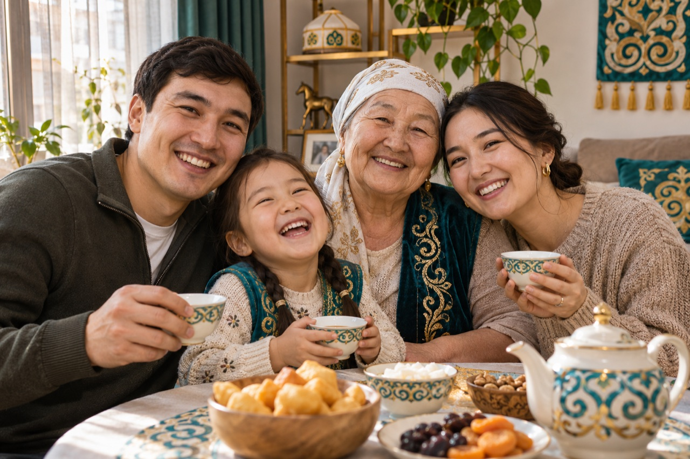

6,2 млн
Казахстан · Социальная помощь
Как понять балл своей семьи.
Посмотрите, как изменение дохода или ошибка в записи могут повлиять на помощь семье в Казахстане. Начните с примера, затем проверьте свои данные.

01 / Проблема
От балла зависит, кого считают нуждающимся
Проблема — лишение семей доступа к социальным пособиям в Казахстане из-за автоматизированной оценки. Семья может потерять право на отдельную выплату, если государственные записи или небольшое изменение учтённого дохода переводят её в A или B.
Подготовиться к проверке данных
Сверьте период дохода, состав семьи и зарегистрированное имущество в уведомлении со своими документами. Запишите расхождение, дату и подтверждающий документ. Спросите в органе, выдавшем уведомление, какую запись использовали и как запросить исправление.

Что можно купить на пособие при рождении?
Цены декабря 2020 года
В сопоставимых ценах на пособие 2026 года можно было купить примерно на 15% меньше, чем в 2021 году. Когда дорожают необходимые товары, у семей остаётся меньше денег на другие покупки в местных магазинах.
Посмотреть цены и инфляцию →От записи в реестре до решения о пособии
Государственные записи
Доход, работа, состав семьи и имущество
Баллы семьи
Цифровая карта семьи присваивает категорию A–E
Доступ к пособиям
Семьи A/B могут лишиться отдельных выплат
Исправление или обжалование
Может ли семья увидеть и оспорить исходные данные?
≈980 тыс.
семей без официального дохода в 2022 году
700 млрд ₸
ожидаемая экономия в 2027 году · около 0,35% ВВП
Кого это затрагивает и что меняется
- Семьи рядом с порогом B. Баллы изменяются ступенями, поэтому небольшой рост дохода может перевести семью через порог.
- Семьи, которых плохо видят государственные базы. По данным Минтруда за 2022 год, более 980 000 из 5,9 млн семей не имели официального дохода (UNDP Kazakhstan, n.d.). Неформальный заработок может отсутствовать в реестре.
- Семьи с устаревшими записями. Проданный автомобиль или переехавший родственник могут изменить балл. В октябре 2026 года министерство утвердило новые правила полноты и точности данных ЦКС (Zakon.kz, 2026c).
- Все семьи, которых касается изменение правил. Методику утвердили в 2023 году, изменили в июне 2026 года и снова пересмотрели после объявления 29 октября 2026 года (Informburo.kz, 2026b).
02 / Контекст и данные
Что измеряет государство и что показывают цифры
ЦКС применяет Методику определения социального благополучия семьи (лица), утверждённую приказом Минтруда № 267 от 29 июня 2023 года и подготовленную совместно с ПРООН (Zakon.uchet.kz, 2023; Ministry of Labour, 2023). МСЭ описывает её как основанную на методе многомерной бедности Алкирей и Фостера (ITU, n.d.). Пресса сообщает о 59 показателях в восьми сферах: доходы и кредиты, транспорт, занятость, социальная защита, здоровье, образование, жильё и сельское хозяйство (Azattyq Rýhy, 2026b; Informburo.kz, 2026a). Сумма прибавленных и вычтенных баллов определяет категорию.
Как начисляются баллы
Доход, работа, дети и другие учтённые обстоятельства добавляют или вычитают баллы.
Доход +620Работа +300Ребёнок −50Кредит −50
Опубликованные части методики
Эти баллы опубликованы до пересмотра 29 октября 2026 года и могли измениться. Один источник указывает семь категорий, остальные — пять (Azattyq Rýhy, 2026a).
Опубликованные части методикиРисунок 1 · Один тенге может изменить категорию семьи
₸0
Рисунок 1. Балл условной семьи из трёх человек (двое работающих взрослых и ребёнок) при разном доходе на человека. Расчёт по опубликованным данным: Finratings (2026), Azattyq Rýhy (2026a), Digital Business (2026). Прожиточный минимум: Kapital.kz (2025).
Показать данные графика
Интерактивная карточка баллов
Рассчитайте баллы семьи
Исследовательская модель по опубликованным баллам. Неопубликованные детали об имуществе, здоровье и других показателях опущены.
C
650
Баллы приведены по сообщениям прессы. См. примечание к методике. Источники
Рисунок 2 · Инфляция снижает покупательную способность пособия
0%20%
Рисунок 2. Единовременное пособие при рождении первого, второго или третьего ребёнка в номинальных ценах и ценах декабря 2020 года. Собственный расчёт: 38 × МРП (CDB.kz, n.d.; Zakon.kz, 2025). ИПЦ декабря к декабрю: Bureau of National Statistics (2024, 2026).
Показать данные графика
Методика: январские выплаты пересчитаны с учётом накопленного ИПЦ на конец предыдущего года. Повышение МРП до 3 180 ₸ в апреле 2022 года на графике не показано.
О чём молчат данные
Правила оценки
Источники расходятся в числе баз данных (Kapital.kz, 2026; ITU, 2025), показателей (Azattyq Rýhy, 2026b; UNDP Kazakhstan, n.d.; ITU, n.d.), выплат и категорий. Семье сложно найти полную действующую шкалу.
Неформальный доход
Оплата наличными и работа за рубежом могут слабо отражаться в реестрах.
Ошибки в записях
В материалах проекта нет публичных данных о числе ошибок, запросов на исправление или успешных жалоб.
Частота неверной классификации
Для оценки числа нуждающихся в A/B нужны связанные микроданные обследования бюджетов домохозяйств и ЦКС. Они не опубликованы.
Банковские данные
По сообщениям прессы, с 2027 года банки будут передавать сведения о счетах заявителей с их согласия. Как это повлияет на балл, неизвестно (Sputnik Kazakhstan, 2026).
Насколько надёжны цифры?
Ряды цен и МРП основаны на официальных данных. Отдельные баллы из прессы предшествуют октябрьскому пересмотру и требуют сверки. Экономия — прогноз правительства. Частота ошибок неизвестна, и именно этот пробел исследует проект.
03 / Состояние исследований
Четыре подхода к вопросу о том, кто получает помощь
Исследования отбора получателей социальной помощи делятся на четыре подхода. У каждого свой вопрос и собственные ограничения.
1. Экономика адресности
Проверка доходов и оценка по косвенным признакам исключают часть бедных семей. Выигрыш адресности следует сопоставлять с ошибками и с универсальными выплатами (Hanna and Olken, 2018). В девяти африканских странах косвенная оценка отсеивала обеспеченных, но пропускала многих из беднейших. Простая демографическая шкала часто давала сопоставимый результат (Brown, Ravallion and van de Walle, 2018). В Индонезии местные сообщества выбирали получателей немного менее точно по критерию потребления, но жители лучше принимали такой выбор (Alatas et al., 2012). Проверка на новых данных и ансамбли улучшают прогноз (McBride and Nichols, 2018). Между точностью, стоимостью, скоростью и легитимностью сохраняется компромисс (Grosh et al., 2022).
ЦКС оценивает нуждаемость косвенно, по административным данным. Открытый вопрос — величина ошибок и их распределение между семьями.
2. Машинное обучение и новые данные
Программа Novissi в Того использовала мобильные и спутниковые данные для помощи во время COVID-19. Ошибки исключения снизились на 4–21% по сравнению с географическим отбором, но при наличии полного социального реестра могли бы быть на 9–35% выше, чем при отборе по реестру (Aiken et al., 2022). В Афганистане мобильные данные выявляли крайне бедные домохозяйства почти так же точно, как обследования потребления (Aiken et al., 2023). Сравнение Бангладеш и Того показало, что косвенные проверки были точнее, а алгоритмы могли снизить стоимость при массовом отборе с малым бюджетом (Aiken et al., 2025). В Латинской Америке машинное обучение улучшало точность и справедливость по отдельным критериям, но определения справедливости у ведомств различались (Noriega-Campero et al., 2020).
У Казахстана уже есть почти полный реестр. Машинное обучение уместно использовать при независимой проверке ошибок по данным обследования.
3. Доступ и административная нагрузка
Право на помощь само по себе не гарантирует её получения. Людей отталкивают нехватка информации, стигма и формальные препятствия (Ko and Moffitt, 2022). Бремя изучения правил, выполнения требований и психологические издержки тяжелее для людей с ограниченным временем и ресурсами (Herd and Moynihan, 2018). В эксперименте со специалистами из Лос-Анджелеса точные подсказки чат-бота повысили точность ответов о праве на пособие на 27 процентных пунктов. Ошибочные подсказки снизили её на вопросах, с которыми специалисты справились бы сами (Gosciak et al., 2026).
4. Критические исследования и власть над оценкой
Автоматизированные системы назначения пособий в США переносили риск на бедные семьи (Eubanks, 2018). Оценивать справедливость модели следует в контексте института, который её применяет (Selbst et al., 2019). Государство упрощает людей до категорий, которыми может управлять (Scott, 1998). Голландский суд остановил систему SyRI в 2020 году из-за нарушения права на частную жизнь (Hague District Court, 2020). Австралийская комиссия признала механизм автоматизированного расчёта задолженности Robodebt неточным и незаконным (Royal Commission into the Robodebt Scheme, 2023).
Казахстан и регион
Данные по Казахстану в основном представлены оценками международных организаций. ЮНИСЕФ сообщает о резком сокращении числа детей среди получателей помощи после реформ 2018 года (UNICEF Kazakhstan, n.d.). Всемирный банк и казахстанское агентство по планированию подготовили оценку бедности и равенства за 2024 год (World Bank, 2024a). ЦКС получила международные награды (UNDP Kazakhstan, 2024). По использованным источникам нельзя судить о точности её оценок.
Эконометрическое исследование в Казахстане выявило ограниченное влияние адресной помощи на уровень жизни и низкую информированность, особенно в сельских районах (Daulieva and Sagynbay, 2024). Интервью со специалистами и наблюдения в центрах обслуживания выявили сложности с документами, запутанные критерии и нехватку ресурсов у сотрудников (Gutova et al., 2026). В соседнем Узбекистане цифровой реестр подключил проверку права на пособие к другим государственным базам, однако заявители всё ещё сталкивались с повторяющимися процедурами разных программ (World Bank, 2024b). Эти исследования связывают автоматизацию с административной нагрузкой. Частота ошибок ЦКС остаётся открытым вопросом.
Известно
Адресные системы пропускают часть нуждающихся. Реестры дают сильную базу сравнения, а издержки доступа мешают получить даже положенную помощь.
Оспаривается
Соотношение выигрыша адресности и ошибок по сравнению с универсальными выплатами, а также само определение справедливости.
Пробел
Нет доступной независимой оценки того, где и у кого ЦКС ошибается, могут ли семьи понять расчёт и оспорить его. Проект предлагает инструменты для такой проверки.
04 / Решение и его издержки
Проверить балл, исправить данные и объяснить расчёт семье
Предложение добавляет к существующей ЦКС три инструмента. Каждый отвечает на конкретную проблему: неизвестна частота ошибок, записи могут быть неверными, а семья не всегда видит свой расчёт и способ его оспорить. Решение о пособии остаётся за человеком.

Государственные базы данных
Метки качества данных
Отмечает вероятно устаревшие или ошибочные записи
Специалисты министерства внутри ЦКС
Специалист подтверждает каждую метку и уведомляет семью
Правила начисления A–E
Разъяснение для семьи
Объясняет балл на казахском или русском и путь исправления или обжалования
Министерство через eGov Mobile
Семья может обратиться к специалисту; модель не принимает решение
Решение принимает специалист
Независимый аудит
Сравнивает категорию ЦКС с измеренной бедностью по регионам и типам семей
Высшая аудиторская палата или университет независимо от министерства
Аудиторы интерпретируют результаты без индивидуальных решений
Как будут работать предложенные инструменты
Метка ИИ может инициировать проверку, которая восстановит помощь. ИИ не должен участвовать в лишении выплаты. Это отличает предложение от нидерландской SyRI, где объединение данных применялось для поиска предполагаемого мошенничества.
Один вариант для разъяснений — ISSAI KAZ-LLM, открытая модель Института умных систем и искусственного интеллекта Назарбаев Университета для казахского, русского и английского, выпущенная в декабре 2024 года (ISSAI, 2024). Размещение в стране позволяет хранить данные в Казахстане.
Телефон
Разъяснение для семьи
Почему у семьи категория B?
При 203 404 тенге на человека баллы за доход меняются с 400 до 620. Общий балл растёт с 650 до 870 и по опубликованным правилам переводит учебную семью из C в B.
Что делать, если запись неверна?
Специалист проверяет каждую метку и сообщает семье результат.
С кем можно поговорить?
В предлагаемом интерфейсе можно связаться со специалистом.
Рабочее место специалиста
Очередь на проверку
Расхождение в данных об автомобиле
Семья сообщает о продаже машины, а она всё ещё числится в реестре. Специалист проверил бы запись.
Расхождение в составе семьи
Семья сообщает, что один из её членов переехал. Специалист уточнил бы текущий состав семьи.
Годовой отчёт
Независимый аудит
| Обследование | A/B | C–E |
|---|---|---|
| За чертой бедности | [x]% | [x]% |
| Выше черты бедности | [x]% | [x]% |
Документированные примеры
Того · Novissi
Программа выдавала помощь во время COVID-19. Независимая оценка в Nature показала сокращение ошибок исключения на 4–21% относительно географического отбора, но полный реестр дал бы лучший результат (Aiken et al., 2022). Для Казахстана урок — применять машинное обучение для аудита существующего реестра.
Великобритания · GOV.UK Chat
В двух публичных пилотах за 18 месяцев более 10 000 пользователей задали около 26 000 вопросов о госуслугах, включая пособия. По данным команды проекта, точность выросла с 76 до 90%. Система ссылается на официальные инструкции, а пользователи просили возможность перейти к консультанту (Government Digital Service, 2026). Разъяснение должно показывать источник и давать доступ к человеку.
Лос-Анджелес
В рандомизированном эксперименте точные подсказки помогли специалистам по пособиям, а ошибочные ухудшили их ответы (Gosciak et al., 2026).
SyRI и Robodebt
SyRI и Robodebt показывают последствия отсутствия прозрачности и человеческого контроля. Robodebt сформировал около 470 000 неправомерных долгов до закрытия в 2020 году (Hague District Court, 2020; Jurist, 2023; Royal Commission into the Robodebt Scheme, 2023).
Издержки
Экологические
Аудит выполняется несколько раз в год. Главная вычислительная нагрузка — разъяснения сразу после рассылки категорий. Перед пилотом следует измерить энергопотребление на тысячу ответов и запросить у дата-центра данные о воде для охлаждения. При сравнении вариантов нужно учесть угольную генерацию Казахстана и проверить долю угля. Сопоставить модель на 8 млрд параметров с более крупной и с текстовым разъяснением по правилу.
Уровень риска · Определяет автор
Экономические
Расходы включают разработку, размещение, обмен данными, независимую команду, время специалистов и обновления при изменении правил. Ведомство оплачивает внедрение и проверку, а подрядчик может получить долгосрочный контракт и влияние на обслуживание. ЦКС ведёт государственная компания «Национальные информационные технологии» при участии ПРООН (ITU, n.d.). Сравнить пилот с публикацией шкалы, службой проверки и открытой статистикой жалоб. Смета отсутствует.
Уровень риска · Определяет автор
Труд
Специалисты получат новые задачи: проверять метки и отвечать людям, которых перенаправил помощник. Скрытая работа включает очистку и разметку реестров, перевод и проверку ответов на казахском. Переход к машинным подсказкам может ослабить самостоятельную оценку специалистов (Gosciak et al., 2026).
Уровень риска · Определяет автор
Управление
Закон Казахстана № 230-VIII о регулировании ИИ подписан 17 ноября 2025 года и действует с 18 января 2026 года. Обзоры выделяют категории риска и права на информацию, возражение и объяснение (EY Kazakhstan, 2025; Legal500, 2025). Требования для такой системы нужно проверить отдельно. Объединение банковских сведений и автоматических меток создаёт риск расширения наблюдения. Данные предлагается хранить в стране, а контроль и публикацию результатов поручить независимому аудитору.
Уровень риска · Определяет автор
Этика данных
Для аудита нужны связанные данные обследования и ЦКС, правовое основание и строгая деидентификация. Семьям нужно сообщать об использовании записей и дать способ их исправить. Регион, жильё и размер семьи могут косвенно отражать этничность или сельскую бедность. Частоту ошибок следует публиковать по группам.
Уровень риска · Определяет автор
05 / Вердикт
Только при этих условиях
Независимый аудит
Да
Проводить независимо от министерства и ежегодно публиковать результаты с указанием неопределённости.
Метки качества данных
Да, с проверкой
Метка может помочь восстановить выплату. Специалист проверяет её, а семью уведомляют.
Разъяснение для семьи
Только пилот
Расширять пилот, если проверка покажет высокую точность на казахском и больше успешных исправлений или жалоб.
ИИ следует использовать для проверки расчёта и помощи семьям в его обжаловании. Полная шкала и независимый аудит — необходимые условия. Иначе ИИ ускорит непрозрачную систему.